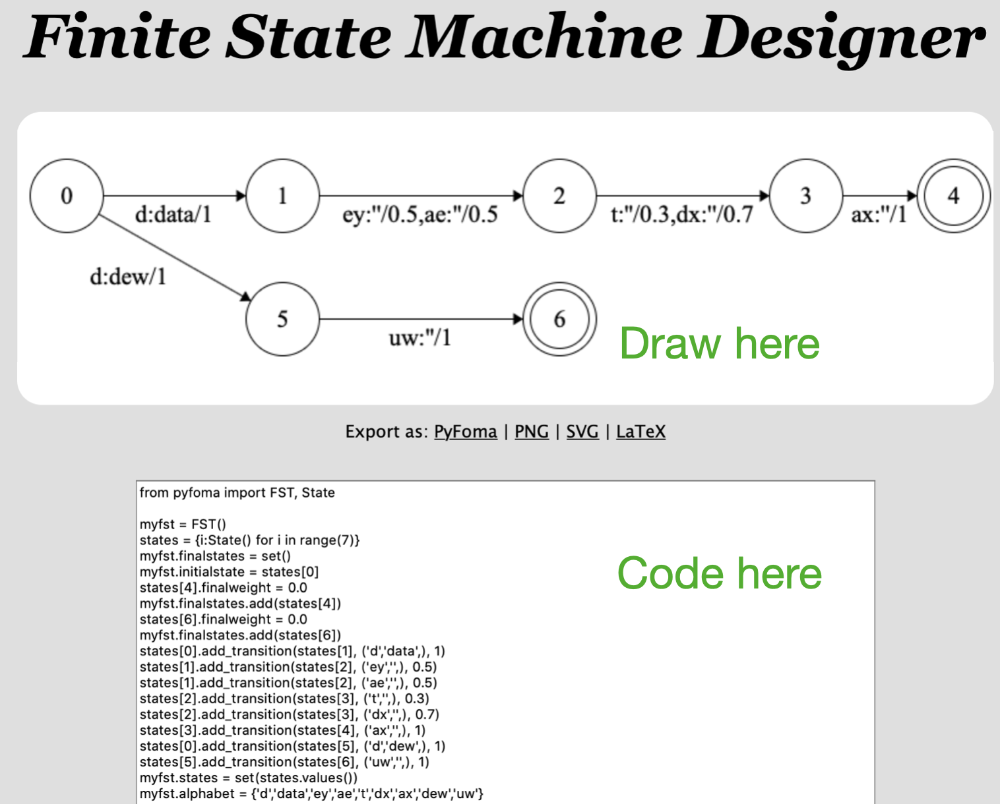

Getting Started
pip install pyfoma
Build weighted and unweighted automata and transducers from regular expressions:
from pyfoma import FST
myfst = FST.re("(cl|n|s)?e(ve|a)r")
myfst.view()
… or through low-level specification
from pyfoma import FST, State
myfst = FST() # Init object
s0 = myfst.initialstate # FST() always has one state, make that s0
s1 = State() # Add a state
s0.add_transition(s1, ("a","x"), 1.0) # Add transitions...
s0.add_transition(s1, ("a","y"), 2.0)
s1.add_transition(s0, ("a","a"), 0.0)
s1.finalweight = 2.0 # Set the final weight
myfst.states = {s0,s1} # Set of states
myfst.finalstates = {s1} # Set of final states
myfst.alphabet = {"a","x","y"} # Optional alphabet
myfst.view()
list(myfst.generate("aaa", weights = True))
… or using a visual tool
FST algorithms
Access basic algorithms such as determinization, minimization, weight pushing, shortest path, etc. Every algorithm has a _mutating_ form and a _non-mutating_ form.
from pyfoma.algorithms import pushed_weights # Only needed for non-mutating alg
fst = pushed_weights(fst) # Non-mutating
# ===== OR =====
fst.push_weights() # Mutating
fst.view()
print(fst) # Also print in AT&T string format
Replacement rules
Construct models of phonology and morphophonology with replacement rule transducers:
nasal = FST.re("[mnŋ]") # Define nasals for reuse in rule
nasalization = FST.re("$^rewrite(a:'ã'|e:'ẽ'|i:'ĩ'|o:'õ'|u:'ũ' / _ $nasal)", {'nasal': nasal})
nasalization.view()
list(nasalization.generate("foma")) # Pass word through transducer, returns generator